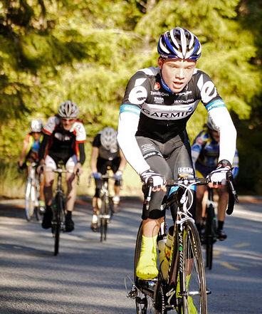

|
 |
 |
|  |
| Zeke Mostov was part of a strong junior turn-out (Judy Colwell) |
Low-Key danced with the weather fates and once again emerged victorius as Saturday dawned crisp and cool for Low-Key's much-anticipated onslaught of Kings Mountain Road. Indeed, the RSVP list filled in record time as there has obviously been plenty of pent-up demand for this Bay area classic.
So much demand, in fact, that Irish hillclimbing champion Ryan Sherlock made the trip to the Bay Area just for the final two climbs of the 2011 series. He faced no easy task, as Low-key contenders Tracy Colwell, Brian Lucido and Carl Nielson were ready to show the interloper how it's done. Then, to sweeten the pot, last-minute cancellations allowed Emilio "RP" Barzini into the game, ready to show his attack on Mix Canyon was no fluke. There was also a late entry from the Chipotle Junior Development Team pair of Adrien Costa and Zeke Mostov, exploiting the well-known Low-Key preference for juniors. With this line-up, Ryan had better have gotten over his jet-lag from his recent training in the Canary Islands... this was perhaps the strongest head-of-the-field in Low-Key history.
And the women's side was also impressive. Late cancellations by Kelly Crowley and Janet Martinez still left a very strong field of 24 women, including most of those in contention for the 2011 Low-Key overall. The women today, as they did last week, had their own informal group, the third to start. Other groups started in order of self-assessed speed, targeting 15 riders per group.
But it was the Lake Wobegon version of "top 15" in group 1 as 36 riders appointed themselves. The large crowd created a bit of chaos, as a split occurred instantly as riders left Greer Road for Kings, "Emilio" and Tracy driving the pace. Ryan, watching his power meter registering on the lactic side of 500 watts, was content to sit in until eventually the pace inevitably faded. And then he pounced.
It was solo time for Ryan from there on. He smashed Tracy Colwell's Low-Key record of 19:51 from 1996, which had been until today the only sub-20-minute time recorded by us.
Over a minute passed before the next rider, "Emilio", crossed the line. Brian Lucido continued his ascent of the Low-Key standings with a very strong third, 16 seconds later. Then fourth went to Adrien, holding off a persistent chase despite carrying a tool-bag and two water bottles up the hill. Adrien's teammate Zeke wasn't able to put his sprinting skills to full use here, and finished a still very strong 13th, so an excellent week for the juniors. Riley Auten, Skyler Colwell, and Liam Colwell also rode very well here, with Adela Skidmore pushing her father Ammon up the hill from her Burley trailer.
In the women's field, Helen Casabona was the first to arrive at the top from the women's start. But Low-Key's Lisa Penzel had accidentally missed the women's group, and thus started with one of the men's groups which followed. When the numbers were finally crunched, Lisa's time came out on top, with Helen second, the two separated by only 18 seconds. Lisa is still a strong second place behind Helen in the overall, but both are still in the game.
And in the hybrid-electric division, Bill Bushnell broke his previous best time up the hill with an amazing 14:01. Bill has been very consistent this year, riding well every week.
Note: Bill Preucel missed the start but rode a solid solo time of 27:38 ± 5 seconds unofficial over the course.
Strava T-shirt qualifiers indicated with orange background.
| pl | # | name | team | cat | time | mph | fph | score |
|---|---|---|---|---|---|---|---|---|
| 1 | 6 | Bill Bushnell | Low-Key | Its All About The Bike | 14:01 | 18.49 | 6592 | 114.61 |
| pl | # | name | team | cat | time | mph | fph | score |
|---|---|---|---|---|---|---|---|---|
| 1 | 825 | Ryan Sherlock | Cycleways/Zipvit | 25+ | 19:08 | 13.55 | 4829 | 135.76 |
| 2 | 600 | Emilio Barzini | Rush Racing/Reparto Corsa | U25 | 20:16 | 12.79 | 4559 | 128.17 |
| 3 | 523 | Brian Lucido | Sr's & Mr's of No Mercy | Tandem | 20:32 | 12.62 | 4500 | 126.50 |
| 4 | 807 | Adrien Costa | Chipotle Junior Development | Junior | 20:36 | 12.58 | 4485 | 126.09 |
| 5 | 1 | Daniel Connelly | Low-Key | 3 | 20:39 | 12.55 | 4475 | 125.79 |
| 6 | 140 | Murray Swanson | Pen Velo/Pomodoro | 40+ | 21:14 | 12.21 | 4352 | 122.33 |
| 7 | 48 | Tracy Colwell | Team Colwell | 40+ | 21:22 | 12.13 | 4324 | 121.57 |
| 8 | 248 | Carl Nielson | Sr's & Mr's of No Mercy | M50+ | 21:29 | 12.07 | 4301 | 120.91 |
| 9 | 824 | Kieran Sherlock | Western Wheelers | 45+ | 21:46 | 11.91 | 4245 | 119.33 |
| 10 | 808 | Ken Gallardo | IronData Thirsty Bear | 35+ | 21:49 | 11.88 | 4235 | 119.06 |
| 11 | 106 | McLovin | The Brown Zone | 1 | 21:52 | 11.85 | 4226 | 118.79 |
| 12 | 44 | Tim Clark | Low-Key | 40+ | 21:53 | 11.84 | 4222 | 118.70 |
| 13 | 815 | Zeke Mostov | Chipotle Junior Development | Junior | 22:08 | 11.71 | 4175 | 117.36 |
| 14 | 510 | Clark Foy | San Jose Bike Club | 45+ | 22:11 | 11.68 | 4165 | 117.09 |
| 15 | 114 | Steve Peck | Western Wheelers | 45+ | 22:12 | 11.68 | 4162 | 117.00M |
| 16 | 144 | Nils Tikkanen | Bike Trip/Symantec | Honey Badger | 22:26 | 11.55 | 4119 | 115.79 |
| 17 | 7 | James Porter | Western Wheelers | 3 | 22:29 | 11.53 | 4110 | 115.53 |
| 18 | 308 | Rune Dahl | Western Wheelers | 45+ | 22:37 | 11.46 | 4085 | 114.85 |
| 19 | 226 | Tom Gardin | Western Wheelers | 45+ | 22:51 | 11.34 | 4044 | 113.68 |
| 20 | 33 | Bill Brier | Team Fremont FFBC p/b Chipotle | 45+ | 22:55 | 11.31 | 4032 | 113.35 |
| 21 | 314 | Marcus Gosling | Contentworks | 40+ | 22:56 | 11.30 | 4029 | 113.26 |
| 22 | 63 | Joe Fant | San Jose Bike Club | 50+ | 22:59 | 11.28 | 4020 | 113.02 |
| 22 | 261 | Joe Sullivan | San Jose Bike Club | 35+ | 22:59 | 11.28 | 4020 | 113.02 |
| 24 | 113 | Christian Paquet | Doogie | 23:11 | 11.18 | 3986 | 112.04 | |
| 25 | 225 | Chris Furgiuele | Dolce Vita Cycling | 35+ | 23:16 | 11.14 | 3971 | 111.64 |
| 26 | 61 | Steven Enns | Dirkless | 23:40 | 10.95 | 3904 | 109.75 | |
| 27 | 246 | Clark M. Natwick | Pen Velo/Pomodoro | 50+ | 23:46 | 10.91 | 3888 | 109.29 |
| 28 | 96 | Bennett Chi Lee | Speedy Bees | 45+/Ponytail | 23:50 | 10.88 | 3877 | 108.99 |
| 29 | 213 | Andy Crews | Diablo | 40+ | 23:53 | 10.85 | 3869 | 108.76 |
| 30 | 237 | Justin Lucke | LGBRC | Plant Based | 23:57 | 10.82 | 3858 | 108.46 |
| 31 | 78 | Tick Houk | The Brown Zone | 50+ | 24:04 | 10.77 | 3839 | 107.93 |
| 32 | 66 | Klaus Fleischmann | 40= | 24:06 | 10.76 | 3834 | 107.78 | |
| 33 | 429 | John Richardson | Pen Velo/Pomodoro | 55+ | 24:07 | 10.75 | 3831 | 107.71 |
| 34 | 803 | Zachary W Beekler | Pen Velo/Pomodoro | 45+ | 24:17 | 10.67 | 3805 | 106.97 |
| 35 | 809 | Tom Greene | Pen Velo/Pomodoro | 50+ | 24:22 | 10.64 | 3792 | 106.60 |
| 36 | 325 | Kevin Keenan | Sr's & Mr's of No Mercy | 55+ | 24:24 | 10.62 | 3787 | 106.45 |
| 37 | 240 | Paul McKenzie | Marc Pro - Strava | 55+ | 24:28 | 10.59 | 3777 | 106.16 |
| 38 | 810 | Stiffler Ingardia | The Brown Zone | 45+ | 24:29 | 10.59 | 3774 | 106.09 |
| 39 | 233 | Alexander Komlik | San Jose Bike Club | 45+ | 24:34 | 10.55 | 3761 | 105.73 |
| 40 | 720 | Jory Stein | Pen Velo/Pomodoro | 50+ | 24:42 | 10.49 | 3741 | 105.16 |
| 41 | 64 | TOM FERREIRA | Eden Bikes | 45+ | 24:49 | 10.44 | 3723 | 104.67 |
| 42 | 133 | Dai Sieh | The Brown Zone | Robusto | 24:51 | 10.43 | 3718 | 104.53 |
| 43 | 813 | Greg McQuaid | Western Wheelers | 40+ | 24:56 | 10.40 | 3706 | 104.18 |
| 44 | 80 | Martin Hyland | Western Wheelers | 55+ | 24:58 | 10.38 | 3701 | 104.04 |
| 45 | 70 | Bruce Gardner | Sr's & Mr's of No Mercy | 40+ | 25:04 | 10.34 | 3686 | 103.62 |
| 46 | 92 | KP | The Brown Zone | None Of Your Bee'S Wax | 25:05 | 10.33 | 3684 | 103.55 |
| 47 | 126 | Denin Sahovic | The Brown Zone | 35+ | 25:15 | 10.27 | 3659 | 102.87 |
| 47 | 85 | George Janour | Bike Trip/Symantec | 40+ | 25:15 | 10.27 | 3659 | 102.87 |
| 49 | 34 | Adam Brinkman | Dirkless | 30+ | 25:17 | 10.25 | 3655 | 102.74 |
| 50 | 336 | Erik Salander | Pen Velo/Pomodoro | 50+ | 25:22 | 10.22 | 3643 | 102.40 |
| 51 | 105 | Russ McCrary | Sr's & Mr's of No Mercy | 50+ | 25:28 | 10.18 | 3628 | 102.00 |
| 52 | 122 | Doug Reynolds | Alberto's Steak House | 60+ | 25:33 | 10.14 | 3616 | 101.66 |
| 53 | 334 | Markus Roccaro | Pen Velo/Pomodoro | Master 40+ | 25:52 | 10.02 | 3572 | 100.42 |
| 53 | 257 | Takanobu Seimiya | Nikon Cycling Club | 40+ | 25:52 | 10.02 | 3572 | 100.42 |
| 55 | 104 | Scott Martin | Bike Trip/Symantec | 50+ | 25:57 | 9.99 | 3561 | 100.10 |
| 56 | 338 | Chuck Spiteri | Pen Velo/Pomodoro | 50+ | 26:00 | 9.97 | 3554 | 99.90 |
| 57 | 211 | Philip Clark | 25+ | 26:01 | 9.96 | 3552 | 99.84 | |
| 58 | 52 | Rob Cosaro | Doogie | 50+ | 26:06 | 9.93 | 3540 | 99.52 |
| 59 | 267 | Alan Weatherall | San Jose Bike Club | 26:10 | 9.91 | 3531 | 99.27 | |
| 60 | 127 | Naoto Sato | 45+ | 26:16 | 9.87 | 3518 | 98.89 | |
| 61 | 95 | Dean Larson | The Brown Zone | 45+ | 26:21 | 9.84 | 3507 | 98.58 |
| 62 | 712 | Sami Laine | Team Poseur | 40+ | 26:25 | 9.81 | 3498 | 98.33 |
| 63 | 148 | David Vrane | Sr's & Mr's of No Mercy | 45+ | 26:46 | 9.68 | 3452 | 97.04 |
| 63 | 215 | Vince Cummings | Alberto's Steak House | 50+ | 26:46 | 9.68 | 3452 | 97.04 |
| 65 | 805 | Phil Cooper | Pen Velo/Pomodoro | 35+ | 26:53 | 9.64 | 3437 | 96.62 |
| 66 | 119 | Thomas Rabedeau | SLACer | 50+ | 26:54 | 9.64 | 3435 | 96.56 |
| 67 | 20 | Ron Abidog | San Jose Bike Club | 40+ | 27:00 | 9.60 | 3422 | 96.20 |
| 68 | 81 | Brandon Iles | 25+ | 27:02 | 9.59 | 3418 | 96.09 | |
| 69 | 132 | Jeff Shute | 30+ | 27:16 | 9.51 | 3389 | 95.26 | |
| 70 | 700 | Matt Alcorn | Eden Bikes | 25+ | 27:21 | 9.48 | 3378 | 94.97 |
| 71 | 722 | Peter Tapscott | Webcor | 60+ | 27:24 | 9.46 | 3372 | 94.80 |
| 72 | 24 | MichaelsJ. Andalora | 55+ | 27:46 | 9.33 | 3328 | 93.55 | |
| 73 | 159 | Robert Zeljko | 40+ | 27:49 | 9.32 | 3322 | 93.38 | |
| 74 | 153 | Jim Williams | Alberto's Steak House | 60+ | 27:54 | 9.29 | 3312 | 93.10 |
| 75 | 337 | Ammon Skidmore | Team Roaring Mouse | 35+ | 30:54 | 8.39 | 2990 | 92.85T |
| 76 | 811 | Larry Klein | Doogie | 50+ | 28:07 | 9.22 | 3286 | 92.38 |
| 77 | 55 | Jon Degenhardt | Alameda Velo | 50+ | 28:08 | 9.21 | 3284 | 92.33 |
| 78 | 108 | Paul Melville | Doogie | 60+ | 28:11 | 9.20 | 3279 | 92.16 |
| 79 | 115 | Ryan Powell | Team Joe Karbowski | 35+ | 28:18 | 9.16 | 3265 | 91.78 |
| 80 | 435 | Matthew Werner | Bike Trip/Symantec | 50+ | 28:25 | 9.12 | 3252 | 91.41 |
| 81 | 717 | Cory Roay | Pen Velo/Pomodoro | 50+ | 28:28 | 9.11 | 3246 | 91.25 |
| 82 | 21 | Detlef Adam | Bike Trip/Symantec | 45+ | 28:40 | 9.04 | 3223 | 90.61 |
| 83 | 258 | Richard Siegel | Above Category Racing | 50+ | 28:43 | 9.03 | 3218 | 90.45 |
| 83 | 310 | Giles Douglas | 35+ | 28:43 | 9.03 | 3218 | 90.45 | |
| 85 | 232 | Franz Kelsch | Alberto's Steak House | 60+ | 28:56 | 8.96 | 3194 | 89.78 |
| 86 | 321 | Mike James | Pen Velo/Pomodoro | 29:31 | 8.78 | 3130 | 88.00 | |
| 87 | 430 | Michael Riepe | Webcor/Alto Velo | 40+ | 29:36 | 8.76 | 3122 | 87.75 |
| 88 | 57 | Frank Drobot | 60+ | 29:40 | 8.74 | 3115 | 87.56 | |
| 89 | 42 | Steve Chapel | Western Wheelers | 65+ | 30:09 | 8.60 | 3065 | 86.15 |
| 90 | 320 | Henry James | Pen Velo/Pomodoro | 30:10 | 8.59 | 3063 | 86.10 | |
| 91 | 817 | Lei Oh | Pen Velo/Pomodoro | 40+ | 30:14 | 8.57 | 3056 | 85.92 |
| 92 | 274 | Riley Auten | Silicon Valley Triathlon | Junior | 30:32 | 8.49 | 3026 | 85.07 |
| 93 | 313 | David Fitch | Western Wheelers | 65+++ | 30:49 | 8.41 | 2998 | 84.29 |
| 94 | 28 | Jan Berka | 45+ | 30:51 | 8.40 | 2995 | 84.20 | |
| 95 | 46 | Kevin Colagiovanni | Team DUD | 25+ | 31:05 | 8.34 | 2973 | 83.57 |
| 96 | 801 | Peter Andrious | Team Poseur | 35+ | 31:25 | 8.25 | 2941 | 82.68 |
| 97 | 12 | Will von Kaenel | LGBRC | 50+ | 34:43 | 7.47 | 2662 | 82.65T |
| 98 | 76 | Jerry Hitchcock | Wolfpack | 55+ | 31:33 | 8.22 | 2929 | 82.33 |
| 99 | 68 | Stephen Fong | San Jose Bike Club | 5 | 31:44 | 8.17 | 2912 | 81.85 |
| 100 | 701 | Clinton Bauder | Team Poseur | 40+ | 31:45 | 8.16 | 2910 | 81.81 |
| 101 | 502 | Richard Allen | Sr's & Mr's of No Mercy | 60+ | 32:36 | 7.95 | 2834 | 79.68 |
| 102 | 146 | Luis Valente | Palo Verde Velo | 50+ | 32:59 | 7.86 | 2801 | 78.75 |
| 103 | 827 | Chris Lipp | 33:03 | 7.84 | 2796 | 78.59 | ||
| 104 | 820 | Rick Reid | Toady | 40+ | 34:07 | 7.60 | 2708 | 76.14 |
| 105 | 819 | Bill Pierce | 34:40 | 7.48 | 2665 | 74.93 | ||
| 106 | 532 | Frank Viggiano | Palo Verde Velo | 50+ | 35:03 | 7.40 | 2636 | 74.11 |
| 107 | 29 | Sachin Bhatia | 30+ | 35:49 | 7.24 | 2580 | 72.52 | |
| 108 | 822 | Craig Sanders | 50+ | 35:50 | 7.23 | 2579 | 72.49 | |
| 109 | 118 | Alec Proudfoot | 45+ | 36:49 | 7.04 | 2510 | 70.55 | |
| 110 | 22 | Michael Ahern | LGBRC | 45+ | 37:38 | 6.89 | 2455 | 69.02 |
| 111 | 47 | Skyler Colwell | Team Colwell | Junior | 39:10 | 6.62 | 2359 | 66.32 |
| 112 | 517 | Ashutosh Kaushik | 25+ | 44:02 | 5.89 | 2098 | 58.99 | |
| 113 | 400 | Liam Colwell | Team Colwell | Junior | 47:54 | 5.41 | 1929 | 54.23 |
| pl | # | name | team | cat | time | mph | fph | score |
|---|---|---|---|---|---|---|---|---|
| 1 | 250 | Lisa Penzel | Low-Key | 45+ | 25:58 | 9.98 | 3558 | 120.96 |
| 2 | 40 | Helen Casabona | Pen Velo/Pomodoro | 50+ | 26:16 | 9.87 | 3518 | 119.58 |
| 3 | 812 | LT | The Brown Zone | This Is The Off Season? | 26:37 | 9.74 | 3472 | 118.00 |
| 4 | 804 | Lesley Butler | Sr's & Mr's of No Mercy | 35+ | 27:05 | 9.57 | 3412 | 115.97 |
| 5 | 714 | McLovely | The Brown Zone | 1 | 27:14 | 9.52 | 3393 | 115.33 |
| 6 | 823 | Rhonda Serr | The Brown Zone | 30+ | 27:19 | 9.49 | 3383 | 114.98 |
| 7 | 423 | Jennie Phillips | Sr's & Mr's of No Mercy | Tandem-Onium! | 27:30 | 9.43 | 3360 | 114.21 |
| 8 | 131 | Lynn Sestak | San Jose Bike Club | 50+ | 28:44 | 9.02 | 3216 | 109.31 |
| 9 | 75 | Laura Hipp | Western Wheelers | 4 | 29:05 | 8.91 | 3177 | 108.00 |
| 10 | 501 | Mary Ellen Allen | Sr's & Mr's of No Mercy | 45++++ | 29:07 | 8.90 | 3173 | 107.87 |
| 10 | 157 | Jamie Yang | 25+ | 29:07 | 8.90 | 3173 | 107.87 | |
| 12 | 520 | Kstiv | The Brown Zone | 40+ | 30:29 | 8.50 | 3031 | 103.04 |
| 13 | 62 | Lori Fabris | Plus 3 | 50+ | 31:44 | 8.17 | 2912 | 98.98 |
| 14 | 346 | Adela Skidmore | Team Roaring Mouse | 5-/Toddler Tow | 30:54 | 8.39 | 2990 | 92.85T |
| 15 | 525 | Vanessa McDonnell | Team Fremont FFBC p/b Chipotle | 40+ | 34:08 | 7.59 | 2707 | 92.02 |
| 16 | 60 | Lisa Emmerich | Sr's & Mr's of No Mercy | 50+ | 34:11 | 7.58 | 2703 | 91.88 |
| 17 | 345 | Heidi Fraser | 50+ | 35:12 | 7.36 | 2625 | 89.23 | |
| 18 | 217 | Danielle Dettling | Rinat | 30+ | 36:23 | 7.12 | 2540 | 86.33 |
| 19 | 13 | Lynn von Kaenel | LGBRC | 34:43 | 7.47 | 2662 | 82.65T | |
| 20 | 306 | Alison Chaiken | Sr's & Mr's of No Mercy | 45+ | 39:00 | 6.65 | 2369 | 80.54 |
| 21 | 77 | Christine Holmes | Low-Key | 45+ | 40:37 | 6.38 | 2275 | 77.33 |
| 22 | 229 | Andrea Ivan | 41:13 | 6.29 | 2242 | 76.20 | ||
| 23 | 4 | Pat Parseghian | 55+ | 45:30 | 5.70 | 2031 | 69.03 | |
| 24 | 826 | Cindi Thompson | 54:04 | 4.79 | 1709 | 58.09 |
| pl | team | score | riders |
|---|---|---|---|
| 1 | Low-Key | 365.44 | Bill Bushnell, Daniel Connelly, Tim Clark, Lisa Penzel, Christine Holmes |
| 2 | Sr's & Mr's of No Mercy | 363.38 | Brian Lucido, Carl Nielson, Kevin Keenan, Bruce Gardner, Russ McCrary, David Vrane, Lesley Butler, Jennie Phillips, Mary Ellen Allen, Richard Allen, Lisa Emmerich, Alison Chaiken |
| 3 | The Brown Zone | 352.12 | McLovin, Tick Houk, Stiffler Ingardia, Dai Sieh, KP, Denin Sahovic, Dean Larson, LT, McLovely, Rhonda Serr, Kstiv |
| 4 | Western Wheelers | 351.87 | Kieran Sherlock, Steve Peck, James Porter, Rune Dahl, Tom Gardin, Greg McQuaid, Martin Hyland, Laura Hipp, Steve Chapel, David Fitch |
| 5 | Pen Velo/Pomodoro | 351.20 | Murray Swanson, Clark M. Natwick, John Richardson, Zachary W Beekler, Tom Greene, Jory Stein, Erik Salander, Markus Roccaro, Chuck Spiteri, Helen Casabona, Phil Cooper, Cory Roay, Mike James, Henry James, Lei Oh |
| 6 | San Jose Bike Club | 343.13 | Clark Foy, Joe Fant, Joe Sullivan, Alexander Komlik, Alan Weatherall, Ron Abidog, Lynn Sestak, Stephen Fong |
| 7 | Bike Trip/Symantec | 318.76 | Nils Tikkanen, George Janour, Scott Martin, Matthew Werner, Detlef Adam |
| 8 | Doogie | 303.95 | Christian Paquet, Rob Cosaro, Larry Klein, Paul Melville |
| 9 | Alberto's Steak House | 291.81 | Doug Reynolds, Vince Cummings, Jim Williams, Franz Kelsch |
| 10 | 291.19 | Philip Clark, Brandon Iles, Jeff Shute, Giles Douglas, Alec Proudfoot, Pat Parseghian | |
| 11 | LGBRC | 273.75 | Justin Lucke, Will von Kaenel, Lynn von Kaenel, Michael Ahern |
| 12 | Team Poseur | 262.82 | Sami Laine, Peter Andrious, Clinton Bauder |
| 13 | Chipotle Junior Development | 243.45 | Adrien Costa, Zeke Mostov |
| 14 | Team Colwell | 242.11 | Tracy Colwell, Skyler Colwell, Liam Colwell |
| 15 | Dirkless | 212.49 | Steven Enns, Adam Brinkman |
| 16 | Team Fremont FFBC p/b Chipotle | 205.36 | Bill Brier, Vanessa McDonnell |
| 17 | Eden Bikes | 199.64 | TOM FERREIRA, Matt Alcorn |
| 18 | Team Roaring Mouse | 185.71 | Ammon Skidmore, Adela Skidmore |
| 19 | Palo Verde Velo | 152.86 | Luis Valente, Frank Viggiano |
| 20 | Cycleways/Zipvit | 135.76 | Ryan Sherlock |
| 21 | Rush Racing/Reparto Corsa | 128.17 | Emilio Barzini |
| 22 | IronData Thirsty Bear | 119.06 | Ken Gallardo |
| 23 | Contentworks | 113.26 | Marcus Gosling |
| 24 | Dolce Vita Cycling | 111.64 | Chris Furgiuele |
| 25 | Speedy Bees | 108.99 | Bennett Chi Lee |
| 26 | Diablo | 108.76 | Andy Crews |
| 27 | Marc Pro - Strava | 106.16 | Paul McKenzie |
| 28 | Nikon Cycling Club | 100.42 | Takanobu Seimiya |
| 29 | Plus 3 | 98.98 | Lori Fabris |
| 30 | SLACer | 96.56 | Thomas Rabedeau |
| 31 | Webcor | 94.80 | Peter Tapscott |
| 32 | Alameda Velo | 92.33 | Jon Degenhardt |
| 33 | Team Joe Karbowski | 91.78 | Ryan Powell |
| 34 | Above Category Racing | 90.45 | Richard Siegel |
| 35 | Webcor/Alto Velo | 87.75 | Michael Riepe |
| 36 | Rinat | 86.33 | Danielle Dettling |
| 37 | Silicon Valley Triathlon | 85.07 | Riley Auten |
| 38 | Team DUD | 83.57 | Kevin Colagiovanni |
| 39 | Wolfpack | 82.33 | Jerry Hitchcock |
| 40 | Toady | 76.14 | Rick Reid |